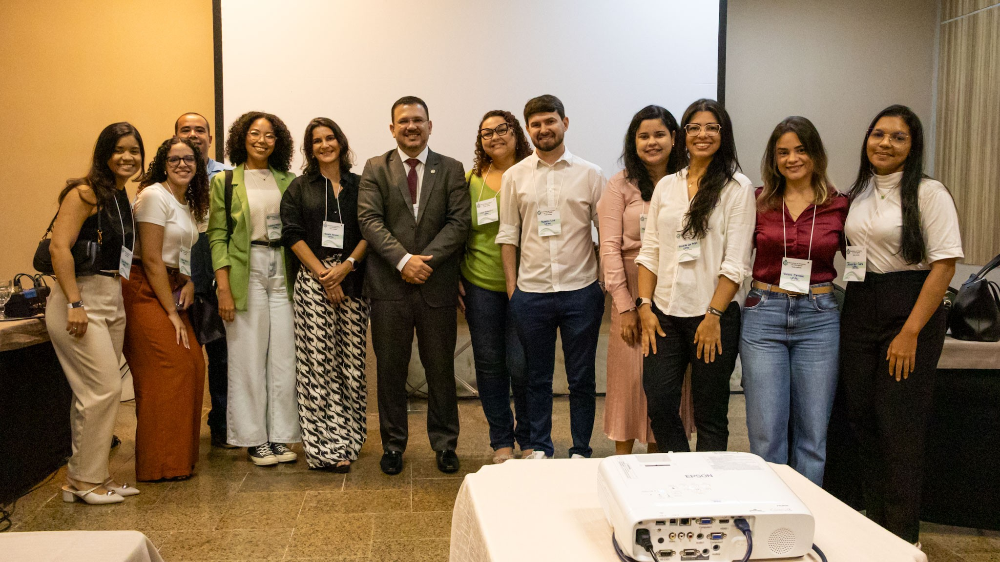
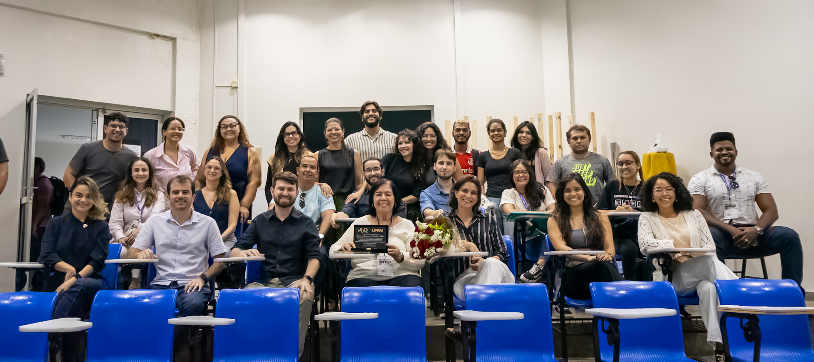

Comunicação LabTam
Onde a ciência do LabTam ganha voz, imagem e alcance.
Matérias, redes sociais, vídeos, presença institucional e cobertura de pesquisa reunidos em um hub pensado para mostrar o que fazemos, onde estamos e por que isso importa.

Onde estamos
Canais para acompanhar o LabTam
Cada canal tem uma função: registro rápido, divulgação institucional, vídeos, matérias e circulação externa.
Instagram@labtam.ufrn
Bastidores, eventos, equipe, registros rápidos e divulgação científica no dia a dia.
LinkedInLabTam - UFRNPesquisa, parcerias, conquistas, editais e conexões institucionais.
YouTube@ufrn.labtamVídeos, apresentações, oficinas, transmissões e conteúdos audiovisuais.
Portal UFRNReportagensConteúdos institucionais que ampliam a visibilidade das pesquisas do laboratório.

Matéria principal
Calculando o combustível limpo
Ferramenta estima produção de hidrogênio renovável a partir de biogás e mostra como o LabTam transforma pesquisa em solução de futuro.
Ler matériaPrincipais matérias
Pesquisa com contexto, impacto e leitura rápida
Inovação
Projeto com colaboração da UFRN recebe Prêmio Finep
Tecnologia e conhecimento científico transformam resíduos industriais em combustível sustentável.
Tratamento ambientalNovo método combina processos para tratar águas residuais do petróleo
Pesquisa combina adsorção e flotação para tratamento de águas residuais da indústria petrolífera.
Portal UFRNCélulas solares de perovskita
Conteúdo institucional sobre materiais e tecnologias fotovoltaicas de nova geração.
O que fazemos
Comunicação para pesquisa, formação e impacto público
Divulgação científica
Transforma resultados de pesquisa em narrativas claras para públicos diferentes.
Cobertura de atividades
Registra eventos, reuniões, capacitações, prêmios e momentos importantes do laboratório.
Presença institucional
Conecta o LabTam à UFRN, parceiros, agências e imprensa externa.
Memória e reputação
Organiza a produção comunicacional para que o histórico do laboratório continue acessível.



Mídia
Fotos, vídeos e redes como parte da narrativa científica.
Essa página foi pensada para crescer: novas fotos, vídeos, cards de redes e links externos podem entrar sem deixar o menu pesado.
LabTam em circulação
Onde as matérias também aparecem
Um comparativo simples para mostrar a função de cada canal e ajudar você a expandir essa área depois.
Arquivo oficial
Guarda as principais matérias, links e conteúdos permanentes do laboratório.
Texto jornalístico
Amplia a circulação de temas como hidrogênio, materiais, sustentabilidade e inovação.
Alcance cotidiano
Mostra bastidores, equipe, eventos, conquistas e chamadas com mais agilidade.
Próximos conteúdos
Esta página vira a central da comunicação do LabTam.
Ela já está estruturada para receber novas matérias, cards de redes, fotos, vídeos e links do portfólio sem perder força visual.